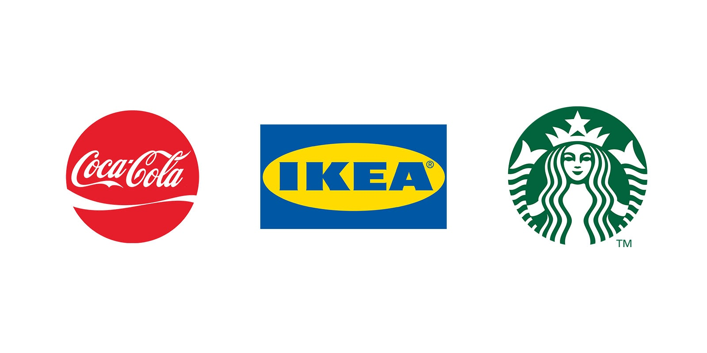

Choosing colors is an important part of the web design process that can make or break the final result. In this guide, we'll review color theory and psychology fundamentals and lay out a step-by-step process for creating color palettes for websites.
By Stephanie Corrigan
If you're a web designer who struggles to create color schemes for websites, you're not alone. Choosing colors may seem intuitive, but in fact there's a lot of strategy that goes into creating effective color palettes.
Everyone has subjective opinions on different colors--some people love bold, bright colors like cherry red and neon green, whereas others gravitate towards soft pastels. The challenge for web designers is to look past their subjective views, and those of their clients, in order to choose colors strategically.
Fortunately, there are certain principles and methods that help make color choice a breeze for web designers. In this guide, we'll teach you how to take the guesswork out of choosing colors for your web design projects. First, we'll review the fundamental color theory and psychology principles every designer needs to know. Then, we'll spell out a simple 3-step process that’ll help you choose colors for websites like a pro.
Check out Ran Segall's video below for a 12-minute introduction to using colors in web design.
Why Choosing The Right Colors Is Important
You may be wondering: is color choice really that important for a website? The answer is a resounding yes. Good color choice promotes legibility, visual appeal, and brand recognition. Bad color choice, on the other hand, creates a poor user experience. As we all know, a poor user experience spells disaster for a business website.
Legibility
Color choice helps determine whether the content on a page is readable. Legibility is optimized with an appropriate level of color contrast between the text and the background. Too little contrast makes the text hard to read; too much contrast is hard on the eyes. A classic example of color contrast is black text on a white background. If you look closely, you'll notice that many websites actually use dark grey text on a white or off-white background in order to maximize legibility while minimizing eye strain.
Visual Appeal
When referring to visual appeal in web design, we're not talking about subjective color opinions. Instead, the emphasis is on creating harmonious color palettes that are easy on the eyes. Choosing colors that have broad visual appeal requires an understanding of color theory. As we'll discuss in more detail later on, there are three types of color schemes that have universal appeal: monochromatic, complementary, and analogous. Recognizing and knowing how to create these color schemes makes choosing colors for websites easier and more effective.

Brand Recognition
Another important role of colors in a web design context is brand recognition. Many brands have a primary color (or two) that has a strong presence across their website, marketing materials, and other brand assets. Some classic examples that come to mind are Coca-Cola's red, the Starbucks green, and Ikea's high-contrast blue and yellow. Consistency is key for creating brand recognition through color. Later on, we'll see how color psychology comes into play when choosing primary brand colors.
Using Color Theory To Choose Colors
Color theory is a practical framework for determining which colors work well together. The principles of color theory revolve around the color wheel, which visually portrays the relationships between different colors. The color wheel contains primary, secondary, and tertiary colors. It can also be divided into warm and cool colors. Familiarizing yourself with the color wheel is the first step to learning how to choose harmonious colors.
Color Schemes
A color scheme is a harmonious combination of colors. The three main types of color schemes designers should know about are monochromatic, complementary, and analogous. You could think of these schemes as sort of like templates for choosing colors. Let's look at each one in more detail.
Monochromatic
Monochromatic color schemes are based on a single hue ("mono" means one). Hues are primary and secondary colors, like red, yellow, and green. To create a monochromatic color scheme, you'd pick a hue, for instance blue, and use tints, shades, and tones to create a harmonious palette. Monochromatic colors tick the box for visual appeal, but be careful to create enough contrast for legibility.
Complementary
Complementary color schemes consist of colors on opposite ends of the color wheel. For example, red and green or blue and orange. Complementary colors tend to contrast well and are therefore a popular choice for web design. However, the contrast can be striking and should therefore be used intentionally in order to ensure that the colors aren't too distracting.
Analogous
Analogous color schemes are made of colors that sit next to each other on the color wheel. These color schemes are inherently visually appealing, but as with monochromatic color schemes, be careful to create enough contrast for legibility. A tip for using an analogous color scheme on a website is to pair it with a neutral color like black or white in order to improve readability. Click here for an in-depth guide on color theory. Once you have a good handle on color theory, creating harmonious color palettes becomes more intuitive. But which scheme is best for a given project, and how do you decide which sections of the color wheel to use? This is where color psychology comes into play.
Using Color Psychology To Choose Colors
Whereas color theory is centered on creating harmonious color schemes, color psychology is concerned with the feelings and emotions different colors evoke. Feelings and emotions may sound wishy-washy in a business context, but they actually play a critical role in branding, marketing, and sales. In fact, emotions are at the core of a consumer's decision making process (source).
Color Meanings
One way to incorporate color psychology when choosing colors for a website is through consideration of common color meanings. Different colors, both consciously and subconsciously, spark certain feelings. These feelings are largely influenced by cultural contexts, as well as personal experiences. Below are some examples of common color associations:
Some color meanings appear contradictory. For instance, red often denotes danger, but it can also convey love and passion. Black can evoke feelings of power in some cases and depression in others. The key here is context.
Context is crucial to consider when choosing colors for a brand or website. Using the color red for a website won't automatically signal danger, just like it won't automatically signal romance. The other elements on the page, such as typography, imagery, and messaging, all work symbiotically to convey a certain look and feel. Color psychology can help inform which colors would best represent your client's brand. It makes sense to use green for a health-centered website because of the color's associations with health, nature, and abundance. However, in creative fields like design, rules are sometimes meant to be broken. Within the right context, an unexpected color scheme could work favorably for a brand. A health brand with a red color scheme would certainly stand out among its green competitors; the trick is to make it stand out in a good way, a skill that takes time and practice to master.
Click here for an in-depth guide on color psychology.
How To Create A Color Palette For A Website
Now that we've reviewed the fundamentals of color theory and psychology, we're ready to put what we've learned into practice in order to create strategic color palettes for websites. Aesthetics are certainly important in the web design world; but a pretty color palette that's thrown together without intention or strategy won't serve anyone.
Here's a simple, 3-step process for choosing colors for a website like a pro.
1. Choose A Primary Color
The best place to start when creating a color palette is with the primary color. A palette's primary color is the star of the show. If we follow the 60/30/10 rule, the primary color takes up about 60% of the color on a website.
When choosing a strong primary color, it's helpful to consider two things: color psychology and context. Reference the color meanings listed above to determine which color best conveys the emotions that users should feel when they land on the website. Should they feel calm or excited? Free or secure? Curious or protected? Don't forget to consider context; relying too heavily on common color associations can be detrimental out of context. P.S. Check out this post to learn more about the 60/30/10 rule and other tips for choosing colors strategically.
2. Choosing Secondary Colors
Once you've chosen a primary color, select one or more secondary colors. According to the 60/30/10 rule, secondary colors take up about 30% of a website. In order to choose secondary colors, you'll need to first determine which type of color scheme is best for the website: monochromatic, complementary, or analogous.
Color psychology can play a role here as well. Soft, muted colors convey a totally different look and feel from bright, vivid colors. A monochromatic blue color scheme might appear calming and soothing; but a complementary blue and orange color scheme could look playful and exciting. Pro tip: Use an interactive color wheel tool like Canva's or Adobe's to play around with different color schemes.
3. Choose An Accent Color
Last but not least, every color palette should include an accent color. This color is used sparingly, taking up about 10% of real estate on a website. Often, the accent color contrasts strongly against the primary color. This contrast helps the accent color stand out and draw attention to important elements on the page, for instance buttons. The term "accent color" typically calls to mind vibrant colors like teal or orange. But note that black and white are considered colors as well and can be used effectively as accent colors, especially on more colorful websites.
Learn The Art And Strategy Of High-Value Websites
In this guide, we reviewed color theory and psychology fundamentals and laid out a 3-step process for creating strategic color palettes for websites. Once you've mastered the process of choosing colors, you're well on your way to creating high-value websites for clients. But what other skills are needed in order to improve your web design process so that you can provide more value to your clients, and in turn, charge more for your work?
Color is just one of several visual design principles every web designer should master. Other important principles include typography, layout, and UX. And in order to put these principles to work, it's essential to master the strategy behind web design. Conducting strategy sessions with your clients will help you uncover what problems they're facing and what goals they're trying to reach; the secret to high-value web design is setting measurable objectives upfront and solving real problems.
In sum, creating high-value websites is a combination of art and strategy. Our web design course, The $10k Website Process, teaches just that. This comprehensive course teaches Ran Segall's tried-and-true process for creating standout websites that create real results for clients. The course will give you the tools and confidence you need to book your dream clients and charge more for your work. Click here to learn more about the course and join the waitlist.